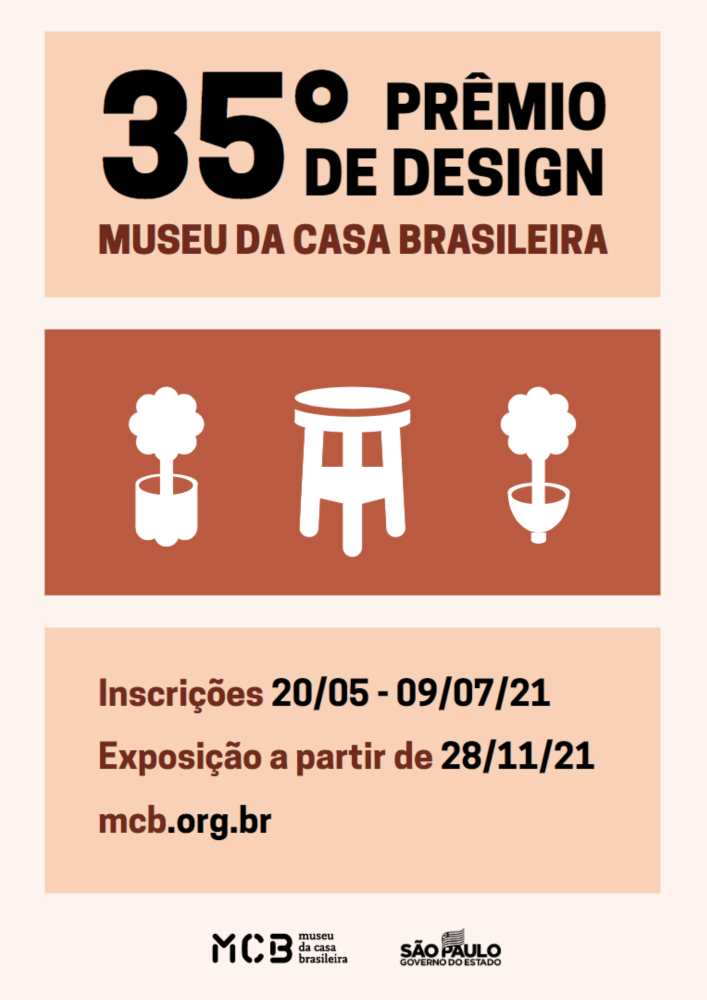

Minhas atividades academicas
As seguintes atividades são algumas menções de projetos interessantes do meu curso superior em design gráfico. Muitos deles fundamentaram pontos importantes em meus estudos.
Desenho de observação
Quando trabalhamos nossas habilidades como um "designer gráfico", buscamos trabalhar várias facetas de nossos sentidos para, cada vez mais, aprimorarmos a forma como visualizamos o mundo. Consequentemente, isso nos auxilia a representá-lo da melhor maneira possível.
É importante evidenciar que não se trata de uma fotografia ou de uma obra ultrarealista, mas sim de um exercício constante de observação e de lapidação (seja em qual meio for) do desenho em questão.

Identidade de marca
Uma das tarefas mais arduosas quando lidamos com a criação de novos conceitos, bem como identidades visuais, logos e afins, se refere à disposição natural da criatividade.
Seguindo essa ideia, o trabalho de metodologia (de identidade de marca) nos faz colocarmos em prática alguns dos principais passos em relação aos modelos de metodologias existentes a partir de algumas técnicas comuns.

Fotografia
A fotografia é uma extensão prática do que foi estudado nos conteúdos de composição, justamente pelo fato de que nós, enquanto fotógrafos, precisamos nos atentar às nuances que constroem uma imagem.
Alguns dos conceitos estudados direcionam a nossa percepção àquelas características que podem tornar uma imagem mais harmoniosa, sendo uma ótima prática no que diz respeito aos fundamentos de composição, o que agrega em muito no repertório de um designer.
Ilustração
Uma das atividades mais construtivas quando buscamos consolidar alguns dos fundamentos de design gráfico se refere à prática de ilustração que, diferentemente do "desenho de observação", nos incentiva a criar elementos a partir das nossas ideias. Essa, por sua vez, tem o objetivo de representar alguma coisa. Com isso, a significação passa a ser um ponto alto a ser atingido durante esses trabalhos.
Os conceitos teóricos e técnicos continuam fundamentando essa prática, no entanto, o diferencial mais importante é o de poder utilizar softwares para lapidar, ou criar do zero, ilustrações.
Design de Embalagem
O projeto de design de embalagem foi direcionado para a criação de uma solução gráfica para uma bebida de pitanga, seguindo as normas referentes à disposição das informações necessárias para a identificação do produto e suas características.
A logo foi desenvolvida através do software illustrator e o processo criativo foi muito produtivo, tanto para a ideação da marca, quanto para a disposição dos elementos que compõem o trabalho.
Identidade Visual
Para o trabalho de identidade visual, foi requisitado um trabalho completo de criação de marca, paleta de cores e fontes de alguma empresa/ideia pessoal. Nesse sentido, desenvolvi a minha própria logo.
A ideia foi bem simple... Escrevi meu nome, como de costume, e utilizei a primeira letra, "M", com a minha própria caligrafia para servir de base. Em seguida, lapidei a forma através do Illustrator até atingir um resultado coerente.
Composição
Dadas as inúmeras possibilidades de composição (visualmente falando), um dos projetos mais desafiadores para mim, durante o curso, foi justamente o de composição, não porque se trata de um estudo muito complexo, mas sim porque eu errei ao querer desenvolver de mais.
Digo isso porque a essência de uma boa composição reside na ideia de expor, com clareza, os elementos presentes no projeto, atingindo uma boa pregnância que, por consequência, converge para a ideia de que "menos é mais".
Ilustração
Depois de praticar desenho de observação, ilustração e composição, tive a oportunidade de mesclar tudo em um trabalho conceitual para uma "nova capa" para o livro "Pequeno Príncipe".
O processo se consistiu na realização de um desenho à mão livre, com a temática do livro em questão, para, posteriormente, vetorizá-lo no software Illustrator, com as devidas lapidações e melhoras. Em seguida, a composição da capa foi simplificada para adição de textos.